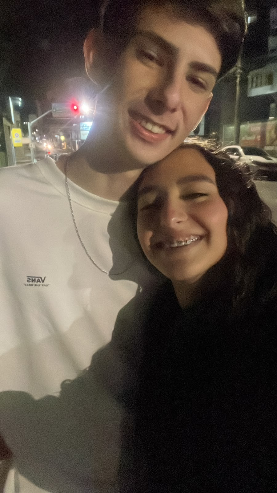
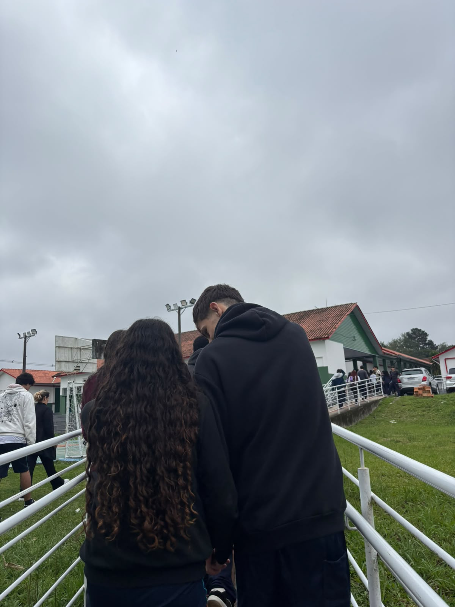

“te amo”
O meu primeiro, dito para você.DESDE 14.09.2026 · ÀS 20:49
Entre tantas
histórias,
a nossa
é a favorita.
Maria Eduarda, eu fiz um universo inteiro para guardar os nossos começos, os seus sorrisos e um pouquinho do quanto eu gosto de você.
Para você, minha princesa. Com todo o meu amor.

14 SET2026meu sorriso favorito
continua sendo o seu. ↖
UM COMEÇO QUE CONTINUA ACONTECENDO
Foi às 20:49.
E eu fiquei com você
no pensamento.
Desde 14 de setembro de 2026.
O nosso tempo, contado segundo por segundo.
A NOSSA HISTÓRIA AO VIVO
00dias
00horas
00minutos
00segundos
0 meses completos de conversa0 semanas de história11 pedacinhos nossos em fotosCada data tem uma história ↗
ESCOLHE UM CAMINHO. TODOS LEVAM A VOCÊ.
Um universo.
Muitos jeitos de te amar.
Fiz espaço para o que a gente viveu,
para o que eu sinto e para tudo
o que ainda podemos viver.
01
Nossa história
Cada data, um pedacinho da gente.
02Nosso álbum
Fotos para olhar sem pressa.
03Minhas cartas
O que eu queria te dizer de pertinho.
0460 motivos
O seu sorriso e muito mais.
05Nossas brincadeiras
Um pouquinho de nós em cada jogo.
06Próximos capítulos
Planos que a gente ainda pode viver.
07Só pra você
Pequenas surpresas, carinho de sobra.
✦O nosso céu
Sete estrelinhas com mensagens guardadas.
DUAS DATAS. UM SENTIMENTO QUE CRESCEU.
Eu falei.
E você também.
“eu te amo”
O seu primeiro, guardado por mim.Pequenas frases que ganharam um espaço enorme na nossa história.
LUGARES QUE AGORA TÊM A GENTE
Às vezes, uma escada
vira lembrança favorita.
3 de outubro. Pimenta Pastéis.
O primeiro encontro.
E um beijo na escada da Kolina kkkkk.
14 SETUma conversa.O começo às 20:49.01 OUTUm pedido.A conversa com o seu pai.03 OUTUm encontro.O Pimenta Pastéis.03 OUTUm beijo.A escada da Kolina.
Reviver a história inteira UM BILHETINHO QUE PODERIA SER SEU AGORA
Entre tanta coisa bonita, eu ainda escolheria o seu sorriso.
01 / 12
FOTOS QUE EU GOSTO DE REVER
Se eu pudesse guardar o tempo,
guardava a gente assim.
Dos carinhos às nossas bobeiras. De um jeitinho só nosso.
o culpado de tudo isso. ♡
MARIA EDUARDA, MINHA PRINCESA
Eu gosto de tudo.
Mas esse sorriso…
Os seus olhinhos. O seu cabelo. O seu jeito. Eu poderia parar em cada detalhe, mas sempre volto para o seu sorriso.
Ele foi a minha inspiração para este universo. E, se estas páginas fizerem você sorrir de novo, eu já vou gostar ainda mais delas.
Encontrei 60 jeitos de te contarUMA CARTA, DEPOIS OUTRA. TODAS PARA VOCÊ.
Algumas palavras
merecem um envelope.
Toque ou passe o mouse para abrir um pedacinho.
Para: minha princesaUma cartinha sua ↗
“Eu queria que você conseguisse se enxergar por um instante com o carinho com que eu te vejo.”
Ler a carta inteiraTem oito cartas esperando por você no próximo envelope.
PARA VOCÊ VOLTAR QUANTAS VEZES QUISER
O nosso começo já é bonito.
Agora imagina o resto.
Eu te amo muito, minha princesa.
Esse cantinho é seu. E cada capítulo tem um pouco de nós.